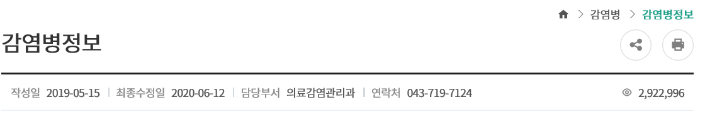

감염병포털 소개
- 법정감염병(전수/표본)의 현황(통계) 및 올바른 정보를 국민들이 쉽게 접근할 수 있는 감염병 정보 포털사이트
통계
- · 전수감시 감염병 : 전수감시 감염병에 대한 주요통계, 질병별 통계, 지역별 통계, 성별/연령별 통계에 대한 통계
- · 표본감시 감염병 :표본감시 감염병에 대한 통계
- · 비브리오 감시 : 해수에서 측정한 비브리오 통계
지침
- · 법정감염병의 증상, 진단 및 치료, 신고기준, 예방과 같은 정보
- · 감염병 관리, 각 기관에서 해야하는 수행체계, 감시체계, 실험실 검사, 역학조사, 환자관리/접촉자 관리, 방역관리에 대한 정보
발간자료
- · 감시연보 : 감염병 신고·보고된 법정감염병 현황을 분석 정리한 자료
- · 역학조사연보 : 시·군·구 역학조사반의 신고 접수된 수인성·식품매개 감염병 집단발생에 분석 정리한 자료
- · 주간소식지 : 표본감시 감염병 주간 정보
- · 실험실 소식지 정보 : 병원체 및 매개체 주간 감시 정보